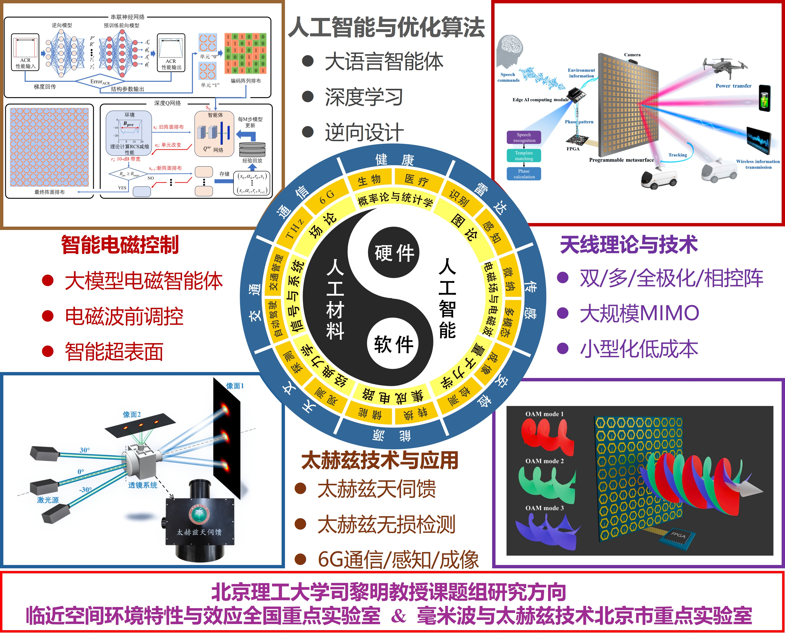
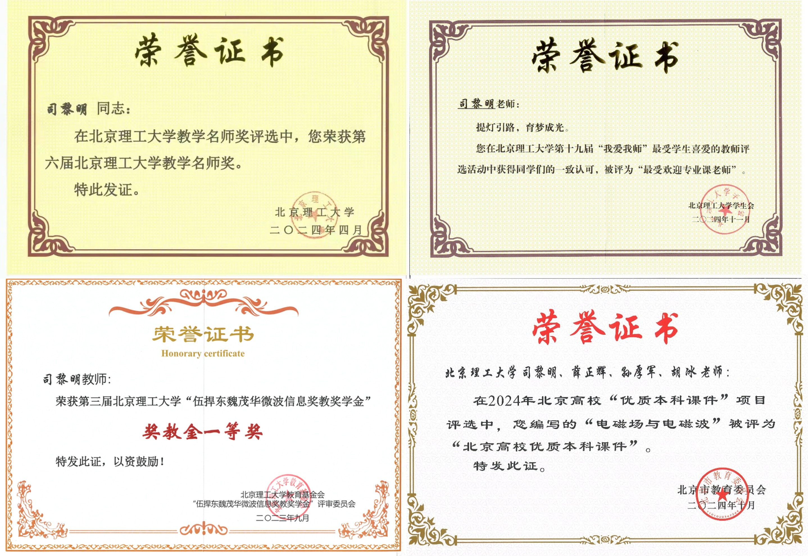

个人简介
司黎明，北京理工大学教授、博士生导师、集成电路与电子学院副院长。主持国家自然科学基金、基础加强等科研项目30余项。 在国内外学术刊物上发表SCI/EI收录学术论文160余篇。担任中国通信学会智能超表面专业委员会副主任委员、中国计量测试学会电子计量专业委员会副主任委员、全国无线电计量技术委员会委员、中国超材料学会理事、国家自然科学基金评审专家、教育部学科评议组成员、北京市科委科技专家等。 担任IEEE MTT-S国际微波研讨会系列、电磁学进展研究研讨会（PIERS）、国际微波与毫米波技术会议（ICMMT）、射频电子测量国际会议（CRFM）、中国微波周、全国天线年会、全国超材料大会、世界光子大会太赫兹技术及应用专题等多个学术大会学术委员会委员、程序委员会委员或分会主席。现为IEEE高级会员、中国电子学会高级会员、中国通信学会高级会员。担任北京理工大学本科专业责任教授、工程硕博士学位评定分委会委员，获北京高校优质本科教材课件、北京理工大学教学名师、“我爱我师”最受学生喜爱的教师等。
研究方向

- 智能电磁控制电磁波调控(幅度/相位/极化/轨道角动量)、智能超表面、表面等离激子
- 天线理论与技术超宽带、可调谐、MIMO阵列、宽角度、双/多/全极化、小型化、低成本
- 太赫兹技术与应用太赫兹前端阵列、集成芯片、态势感知、微波/太赫兹/红外/激光多模复合技术
- 人工智能与优化算法深度学习、强化学习、大模型智能体、逆向设计
教学工作

- 电磁场与电磁波本科核心专业课程：电子科学与技术、信息与通信工程、集成电路科学与工程、电气工程等学科的核心专业基础课
- 太赫兹技术与应用研究生专业课程：太赫兹波位于微波与红外线之间，是人类目前尚未完全开发的电磁波谱“空白”区
代表性论著
- Corresponding Author, “Speech-Controlled Reconfigurable Intelligent Metasurface for Real-Time Wireless Power Transfer and Communication,” Research, DOI: 10.34133/research.0831, (2025).
- Corresponding Author, “Dynamic Manipulation of High-Order Poincaré Sphere Polarization States via Transmissive Space-Time-Coding Metasurface,” Photonics Research, DOI: 10.1364/PRJ.565657, (2025).
- Corresponding Author, “Dynamic Generation of Multiplexed Vortex Beams by a Space-time-coding Metasurface,” Photonics Research, DOI: 10.1364/PRJ.543744, (2025).
- Corresponding Author, “Advanced Physical Layer Metasurface-Empowered Cryptography with Robustness, High Capacity, and Enhanced Security,” Laser & Photonics Reviews, DOI: 10.1002/lpor.202402046, (2025).
- Corresponding Author, “Multi-Wavelength Metasurface Empowered Cryptography for Heightened Security and Improved Fidelity,” Laser & Photonics Reviews, DOI: 10.1002/lpor.202301014, (2024).
- Corresponding Author, “Crosstalk-Free Spin-Selective Metasurface for Full-Space Wavefront Manipulation with Nearly 100% Efficiency,” Advanced Optical Materials, DOI: 10.1002/ADOM.202501041, (2025).
- Corresponding Author, “High‐Efficiency Dual‐Band Metasurface with Independent Multifold Geometric Phases,” Advanced Optical Materials, DOI: 10.1002/adom.202300347, (2023).
- Corresponding Author, “High-Efficiency Ultrathin Dual-Wavelength Pancharatnam–Berry Metasurfaces with Complete Independent Phase Control,” Advanced Optical Materials, DOI: 10.1002/adom.201900594, (2019).
- Corresponding Author, “Multichannel OAM Encrypted Holography Based on Complex-Amplitude Janus Metasurface,” IEEE Transactions on Antennas and Propagation, DOI: 10.1109/TAP.2026.3738109, (2026).
- Corresponding Author, “Hybrid Neural Network-Driven Inverse Design of Metasurface for Ultra-Broadband RCS Reduction,” IEEE Transactions on Antennas and Propagation, DOI: 10.1109/TAP.2025.3621515, (2025).
展开其余代表性论文（第11—28项）
- First Author, “Complex-Amplitude Janus Metasurface for Asymmetric 3-D Holography,” IEEE Transactions on Antennas and Propagation, DOI: 10.1109/TAP.2025.3637584, (2026).
- Corresponding Author, “Quasi-BIC-enhanced Integrated Sensing Dielectric Metasurfaces for Molecular Fingerprint Retrieval and Chiral Detection,” Nanoscale, DOI: 10.1039/D4NR04665J, (2025).
- Corresponding Author, “An Optically Transparent Rectifying Metasurface for 2.4/5.8 GHz Dual-band RF Energy Harvesting,” Applied Physics Letters, DOI: 10.1063/5.0242451, (2025).
- Corresponding Author, “Advances in Artificial Intelligence for Artificial Metamaterials,” APL Materials, DOI: 10.1063/5.0247369, (2024).
- Corresponding Author, “Transmission–reflection-integrated metasurface for full-space, six-channel, and polarization-multiplexed holography,” Optics Express, DOI: 10.1364/OE.581085, (2025).
- Corresponding Author, “Highly Efficient Airy Beam Generator with High Polarization Purity by a Receiving-transmitting Metasurface,” Optics Express, DOI: 10.1364/OE.532157, (2025).
- Corresponding Author, “Rapid Customized Design of a Conformal Optical Transparent Metamaterial Absorber Based on the Circuit Analog Optimization Method,” Optics Express, DOI: 10.1364/oe.452694, (2022).
- Corresponding Author, “Phase-to-Pattern Inverse Design for a Fast Realization of a Functional Metasurface by Combining a Deep Neural Network and a Genetic Algorithm,” Optics Express, DOI: 10.1364/OE.478084, (2022).
- Corresponding Author, “Study of Symmetries of Chiral Metasurfaces for Azimuth-Rotation-Independent Cross Polarization Conversion,” Optics Express, DOI: 10.1364/OE.452773, (2022).
- First Author, “Broadband Extremely Close-Spaced 5G MIMO Antenna with Mutual Coupling Reduction Using Metamaterial-Inspired Superstrate,” Optics Express, DOI: 10.1364/OE.27.003472, (2019).
- 通讯作者，“双频太赫兹圆极化吸波与异常反射手性超表面”，电子学报， DOI: 10.12263/DZXB.20221118（2023）. (邀请论文，中文核心期刊)
- 第一作者，“视觉图像驱动的多模型协同超表面逆设计方法”，科技导报， DOI: 10.3981/j.issn.1000-7857.2026.01.00116,（2026）. (邀请论文，中文核心期刊)
- 第一作者，“涡旋波通信技术：优势与挑战”，科技导报， DOI: 10.3981/j.issn.1000-7857.2026.02.00019,（2026）. (邀请论文，中文核心期刊)
- 第一作者，“2020年太赫兹科学与技术热点回眸”，科技导报， DOI: 10.3981/j.issn.1000-7857.2021.01.017,（2025）. (邀请论文，中文核心期刊)
- 第一作者，“涡旋波超表面研究现状与应用进展”，科技导报，DOI: 10.3981/j.issn.1000-7857.2024.02.00240，(2024). (邀请论文，中文核心期刊)
- 第一作者，“机器学习辅助太赫兹涡旋波超表面快速设计方法”，无线电通信技术，DOI: 10.3969/j.issn.1003-3114.2024.01.015，(2024). (邀请论文，中文核心期刊)
- 第一作者，“电磁波极化转换虚拟仿真实验教学探究”，实验室研究与探索， DOI: 10.19927/j.cnki.syyt.2024.04.022,（2024）. (中文核心期刊)
- 第一作者，“基于CST的涡旋电磁波虚拟仿真实验教学案例探讨”, 实验技术与管理， DOI: 10.16791/j.cnki.sjg.2023.06.031,（2023）. (中文核心期刊)
代表性专利
- 第一发明人，一种S、C和X波段柔性透明电磁混淆超材料隐身装置，国家发明专利，CN113540812B.
- 第一发明人，一种柔性透明超宽带RCS减缩装置，国家发明专利，CN11380507B.
- 第一发明人，太赫兹准光功率合成与放大装置，国家发明专利，CN104701635B
- 第一发明人，由集总元件和二极管构成的有源左手传输线，国家发明专利，CN102522618B.
- 第一发明人，一种集成超表面的太赫兹双频共口径大视场成像装置，国家发明专利, CN117590556B.
详细论文列表：ORCID · 0000-0002-8213-228X
部分主持课题
- 国家自然科学基金项目：《时空编码超表面涡旋波生成理论与加密通信应用验证》
- 国家自然科学基金项目：《高性能集成太赫兹超表面阵列构筑及电磁波调控机理研究》
- 国家自然科学基金项目：《集成石墨烯的太赫兹有源超材料电磁特性及可控功能器件研究》
- 中央高校基本科研业务专项：《大模型智能体驱动的复杂电磁超材料认知与创制》
- 北京市自然科学基金：《面向6G移动通信的智能超表面阵列关键技术研究》
- 国家市场监督管理总局基础加强专项：《超材料增强太赫兹与红外探测器性能研究》
- 毫米波国家重点实验室开放课题：《信息超表面通信与感知系统研究》
- 河北省自然科学基金：《多模态超表面智能电磁控制机理与应用研究》
- GF项目：《XXXX太赫兹XXXX》
- GF项目：《XXXX超高斯波束天线XXXX》
- GF项目：《XXXX波段XXXX》
- GF项目：《XXX RCS近远场变换XXXX》
- GF项目：《XXXX太赫兹天饲馈XXXX》
- GF项目：《XXXX人工智能算法XXXX》
- GF项目：《XXXX隐身技术XXXX》
- GF项目：《XXXX约瑟夫森结微波器件XXXX》
- 教育部供需对接就业育人项目——重点领域校企合作项目：《集成电路创新拔尖人才校企协同育人机制探索》
- 教育部产学合作协同育人项目：《面向集成电路多类型人才培养的创新创业与实践》
- 教育部产学合作协同育人项目：《面向集成电路与电子领域的复合型拔尖人才培养体系探索》
- 教育部产学合作协同育人项目：《电磁场与电磁波虚拟仿真实验室改革与建设》
- 北京高等教育本科教学改革创新项目：《集成电路本研贯通卓越工程师领军人才培养体系探索与实践》
- 北京市高等教育学会“人工智能+”教材建设专项攻关课题：《面向智能电磁空间的人工智能电磁场与电磁波教材与教学体系构建》
- 企事业单位、研究院所横向项目若干等
科研成果致谢
[中文]国家自然科学基金 (批准号: 62571049、62271056、62201037、62171186)、中央高校基本科研业务专项资金资助（批准号：2026CX11005）、国家市场监督管理总局专项（批准号：AKYKF2423）、北京市自然科学基金-海淀原始创新联合基金（批准号：L222042）、河北省自然科学基金（批准号：F2025105029）、毫米波国家重点实验室开放课题（批准号: KN20250214）、高等学校学科科研创新引智计划项目（批准号：B14010）资助的课题。
[英文] This work was supported by the National Natural Science Foundation of China (Grants nos. 62571049, 62271056, 62171186, and 62201037), the Fundamental Research Funds for the Central Universities (Grant no. 2026CX11005), the Beijing Natural Science Foundation of China-Haidian Original Innovation Joint Fund (Grant no. L222042), the Hebei Natural Science Foundation (Grant no. F2025105029), the Open Research Fund of State Key Laboratory of Millimeter Waves (Grant no. KN20250214), and the 111 Project of China (Grant no. B14010).
荣誉奖励
- 2026年中国电子学会电子信息教学成果大赛二等奖“产学研深度融合集成电路拔尖创新人才培养体系创新与实践”
- 2026年北京市大学生集成电路设计竞赛二等奖指导教师
- 2025年指导学生荣获全国天线年会学生优秀论文奖“太赫兹双频段大视场共口径透镜天线设计”
- 2025荣获全国大学生集成电路创新创业大赛优秀组织教师奖
- 2025荣获全国大学生集成电路创新创业大赛优秀指导教师
- 2025年荣获北京理工大学教学成果一等奖“胸怀大局、协同育人、创新包容大类培养书院学院协同育人机制探索与实践”
- 2025年荣获北京理工大学第三届教师教学创新大赛二等奖
- 2024年荣获北京理工大学“我爱我师”最受学生喜爱教师
- 2024年荣获北京高校优质本科教案课件“电磁场与电磁波”
- 2024年指导研究生荣获北京市优秀毕业生
展开更多荣誉奖励（第11—28项）
- 2024年荣获北京理工大学教学名师
- 2024年荣获北京理工大学教学成果特等奖“集成电路卓越工程师领军人才本研贯通产教融合一体化培养模式研究与实践”
- 2024年荣获北京理工大学教学成果一等奖“传承红色基因，成就国之大者’集成电路多元化拔尖创新人才培养体系探索与实践”
- 2024年荣获北京理工大学教学成果二等奖“拓视野贯通培养领军人才：王小谟英才班培养建设探索与实践”
- 2023年荣获北京理工大学微波信息优秀教师奖一等奖
- 2023年荣获北京理工大学迪文优秀教师奖
- 2023年荣获北京理工大学本科生毕业设计（论文）重点项目指导教师（优秀本科毕设）
- 2022年指导研究生荣获北京市优秀毕业生
- 2022年北京市大学生集成电路设计竞赛一等奖指导教师
- 2021年荣获北京理工大学教学成果二等奖“以电子信息类创新人才培养为牵引的海峡两岸文化交流实践”
- 2020年指导学生荣获全国太赫兹科学技术与应用学术交流会优秀论文奖
- 2019年荣获北京理工大学优秀硕士毕业论文指导教师
- 2018年荣获北京理工大学优秀硕士毕业论文指导教师
- 2017年荣获北京理工大学信息与电子学院优秀共产党员
- 2016年荣获北京理工大学优秀硕士毕业论文指导教师
- 2015年获荣获北京理工大学理工雷科教学贡献奖
- 2014年荣获北京理工大学优秀硕士毕业论文指导教师
- 学生期间荣获国家奖学金、北京理工大学徐特立奖学金、优秀博士论文育苗基金、优秀研究生标兵、 CASC奖学金、T-more奖学金、 “五四”学术科技奖等。
学术兼职
- 美国电气电子工程师学会高级会员(IEEE Senior Member)
- 中国电子学会(CIE)高级会员
- 中国通信学会(CIC)高级会员
- 中国通信学会智能超表面专业委员会副主任委员
- 中国计量测试学会电子计量专业委员会副主任委员
- 全国无线电计量技术委员会委员
- 中国超材料学会理事
- 全国人工智能计量协同创新生态伙伴联盟理事会理事
- 智能超表面技术联盟理事
展开更多学术兼职（第10—40项）
- 国家自然科学基金评审专家
- 教育部学科评议组成员
- 教育部学位中心评审专家
- 全国研究生教育评估监测专家库专家
- 北京市科委科技专家
- 北京市自然科学基金评审专家
- 河北省自然科学基金评审专家
- 江苏省自然科学基金评审专家
- 浙江省自然科学基金评审专家
- 中国电子学会科学技术奖评审专家
- 浙江省教学成果奖评审专家
- 广西省教学成果奖评审专家
- 中国电子学会电磁频谱学术大会编委与分论坛主席
- 中国通信学会服务国家战略专项专家委员
- 中国计量测试学会碳足迹研究领域专家库专家
- 北京长城计量测试技术研究所特聘研究员
- 北京理工大学本科专业责任教授
- 北京理工大学工程硕博士学位评定分委会委员
- SCI期刊《Electronics》编委
- SCI期刊《International Journal of Optics》编委
- SCI期刊《Microstructures》青年编委
- 《科技导报》编委
- 《遥测遥控》编委
- 《天线学报》编委
- 《计测技术》青年编委
- 《哈尔滨工业大学学报》青年编委
- SCI期刊《IET Microwaves, Antennas & Propagation》专刊主编“Antenna Integration and Miniaturization Techniques”
- SCI期刊《Nanomaterials》专刊主编“Metamaterials and Metasurfaces for Advanced Electromagnetic Wave Manipulation and Applications”
- 中文核心期刊《哈尔滨工业大学学报》专题主编“人工智能电磁科学与技术”
- 中文核心期刊《科技导报》专题主编“智能电磁控制”
- 国内外著名期刊审稿专家，如IEEE TMTT, IEEE TAP, IEEE AWPL, IEEE MWCL, IEEE PTL, IEEE PJ, AM, AFM, LPR, AOM, APL, JAP, OE, OL, MOTL, EL, 科技导报、物理学报、电子学报、雷达学报、系统工程与电子技术、北京理工大学学报、哈尔滨工业大学学报、上海交通大学学报等
招生与招聘
欢迎本科生参与科研和毕设，长期招收硕士研究生、博士研究生、博士后、科研助理和教职。
Interested applicants are cordially invited to submit their full CV via email to Prof. Liming Si (lms@bit.edu.cn).
本页根据北京理工大学学院教师介绍整理，资料整理日期：2026年11月20日。